Archives
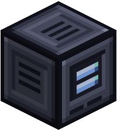
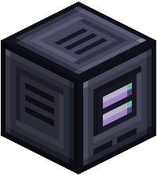
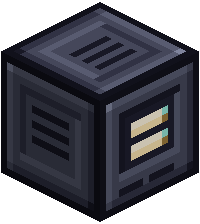
An Archive keeps a backup of your wafers. If one is ever lost or destroyed, the Archive rebuilds it onto a blank wafer, items and all.
| Tier | Wafers it protects | Charge | Uses |
|---|---|---|---|
| Basic | 3 | 50,000 FE | 5 FE a tick |
| Advanced | 6 | 100,000 FE | 10 FE a tick |
| Ultimate | 12 | 200,000 FE | 20 FE a tick |
An Archive needs power to link or recover, so give it a cable or a generator next to it. Linking a wafer costs 1,000 FE and a recovery 10,000 FE by default.
Using one
- Put a wafer in the link slot and press Link.
- Shift-right-click with the linked Deck to back up all its wafers in slot order.
- To recover a lost wafer, put a blank one of the same kind in the recover slot and press Recover.
The blank wafer has to be the same size or bigger than the one it replaces.
Upgrading
The old Archive is used up. The new one keeps its links, its owner and its charge.
Recipes
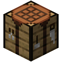
Crafting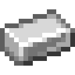
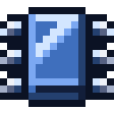
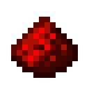
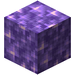

Crafting
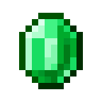


Crafting
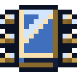
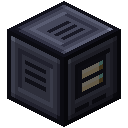